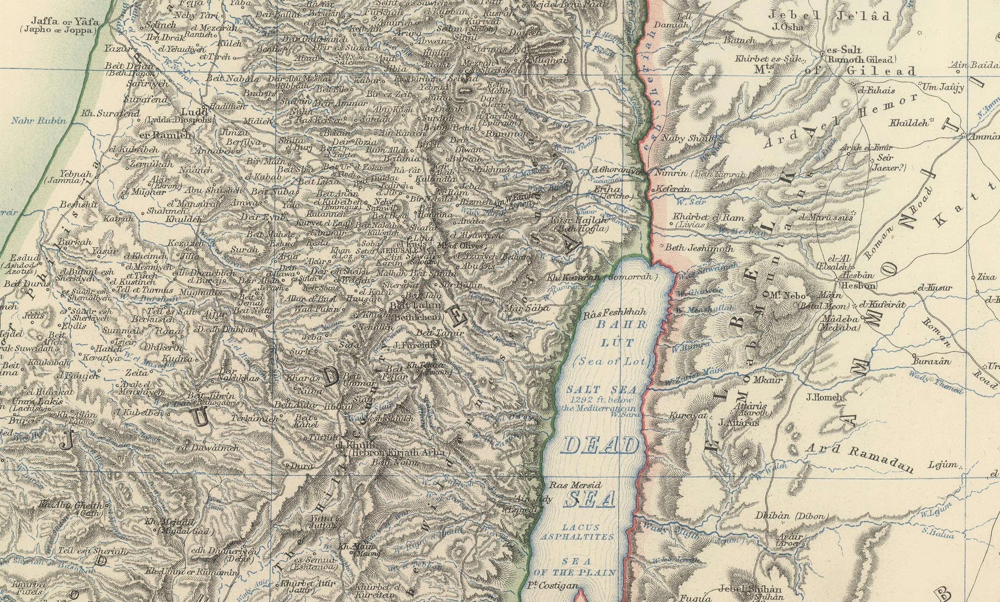
University of Hertfordshire · North Hertfordshire Museum
Margaret Thomas, Henrietta Pilkington and the Victorian journey to Palestine and Syria
In a case in North Hertfordshire Museum hangs a painting of a woman at work: palette and brushes in hand, a portrait taking shape on the easel, finished and unfinished canvases crowding round her. The museum believes it is a self-portrait. The painter is Margaret Thomas – artist, sculptor, poet and travel writer, who trained in Melbourne and London, exhibited at the Royal Academy, and then, in her fifties, packed a paint-box onto a horse and spent the better part of two years riding through Palestine and Syria.
She did not travel alone. Beside her, on shipboard and horseback, in tents and hospices, was Henrietta Pilkington – her companion of some sixty years, and a painter in her own right.
The museum holds them together: twenty-seven oil paintings by Thomas, and more than eighty watercolours by Pilkington, gathered from a shared lifetime of looking.
Thomas wrote about the journey. Her book, Two Years in Palestine and Syria, appeared in 1900 with sixteen colour plates reproduced from her own paintings – and three of the originals are in this collection. Pilkington left no book, no diary, no letters that have yet come to light. What she left instead is a portfolio of small, rapid watercolours, made on the spot at Jerusalem, Tiberias, Hebron and Baalbek. If Thomas gives the journey its words, Pilkington gives it a second pair of eyes.
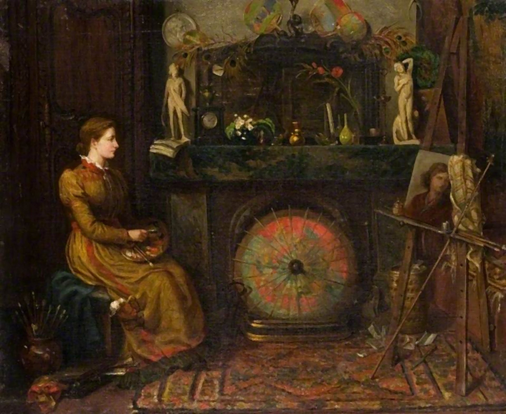
From the letters“Time rolls on for me as usual, it seems to me that I’m waiting for a big change.”
Margaret Thomas, letter to ‘Rebie’, Melbourne, 1866
Translated from the French
From Croydon and Melbourne to Rome and Pimlico, through the streets of Jerusalem and the ruins of Baalbek, and home at last to a cottage at Norton, on the edge of Letchworth – where their story and their pictures became part of Hertfordshire’s own. Float over the map’s stations to see the places through the two women’s eyes – or click a date on the timeline below and the map will take you there.
Croydon
1842
Margaret Thomas was born Margaret Sarah Cook on 23 December 1842.
Melbourne
1852
The family emigrates; still a child, she studies sculpture under Charles Summers – among the very first women in the colony of Victoria to do so.
Rome & London
from 1867
South Kensington, two and a half years in Rome, the Academy Schools – and in 1872 the Academy’s silver medal for modelling, the first won by a woman.
Brittany
1888
In the winter of 1888 the two women give up their London life and go abroad – first to Brittany, then wherever the next book leads.
Spain & Tangier
by 1892
“…we, two lady artists, decided to risk all this, and try with our moderate means to accomplish what the rich only usually undertake.”
Athens
1893
Pilkington dates her watercolour of the Acropolis in her own hand – one entry in a thirty-year visual diary.
Sicily
1893–96
Taormina and the island, painted across repeated visits in the 1890s.
Palestine & Syria
1895–96
The better part of two years on horseback: Jerusalem, Tiberias, Hebron, Baalbek – painted by both women, each in her own hand.
Cairo & Karnak
1896
Karnak in January 1896, dated on the spot.
Norton, Letchworth
home
The journey ends in Hertfordshire, and the pictures become the county’s own.
Before them, Frederic Leighton and Amelia Edwards had painted this same ground. Thomas and Pilkington came later, and painted it as they found it – and now and then they worked at the very same spot. Here is the Damascus Gate at Jerusalem, in Thomas’s oil and Pilkington’s watercolour.
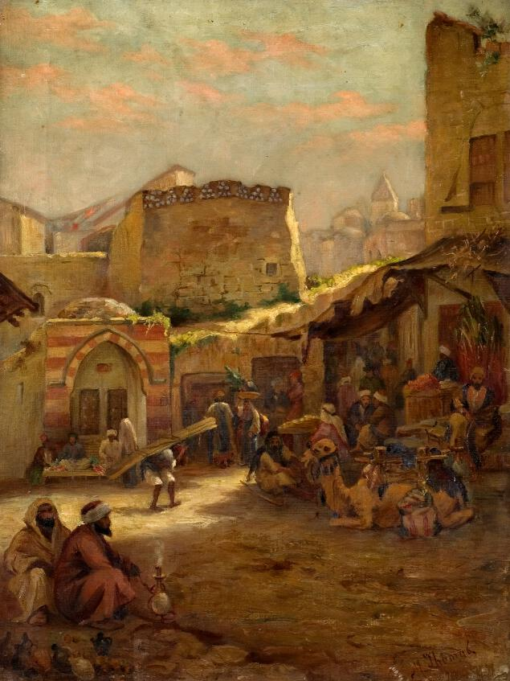
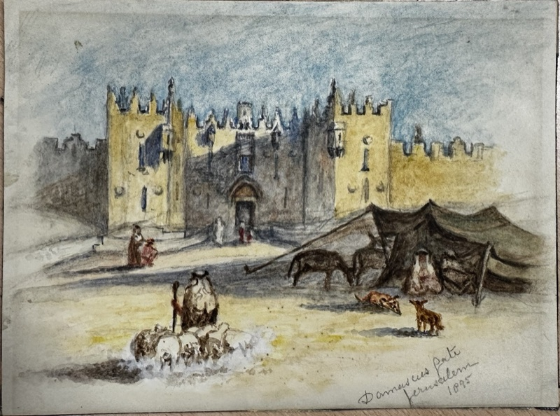
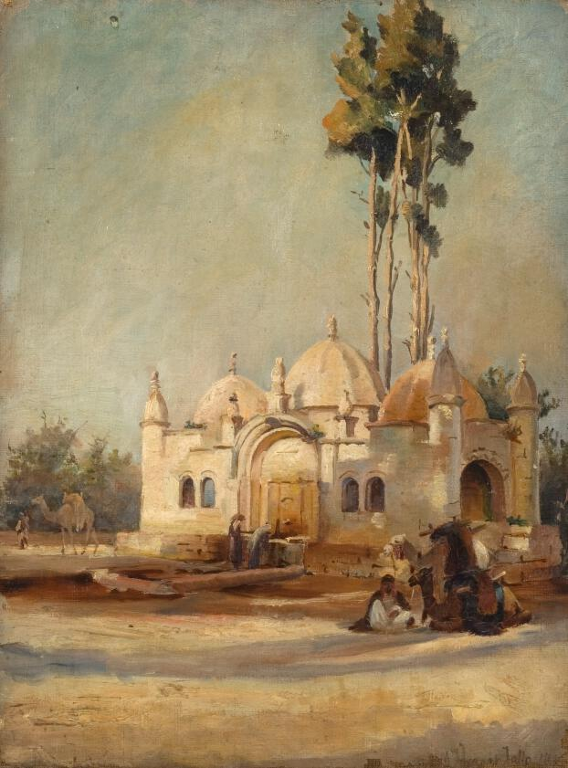
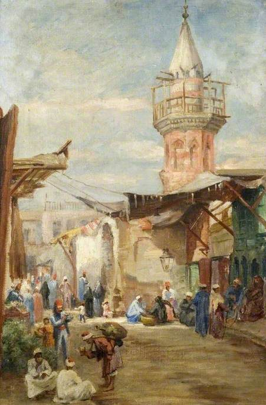
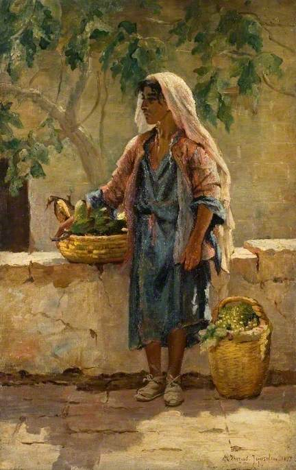
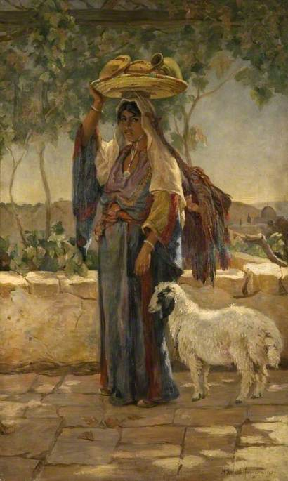
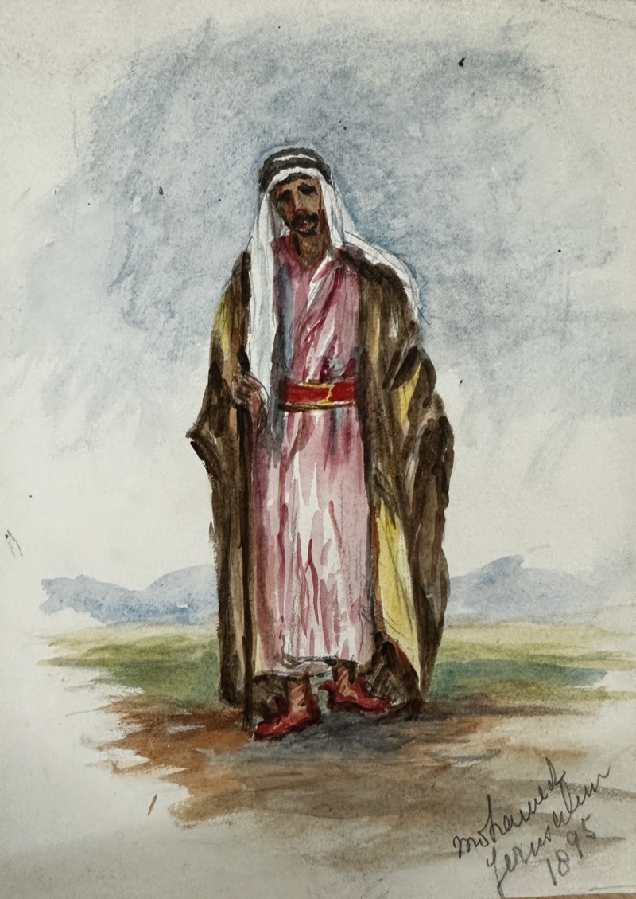
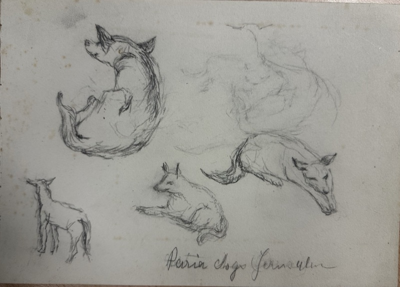
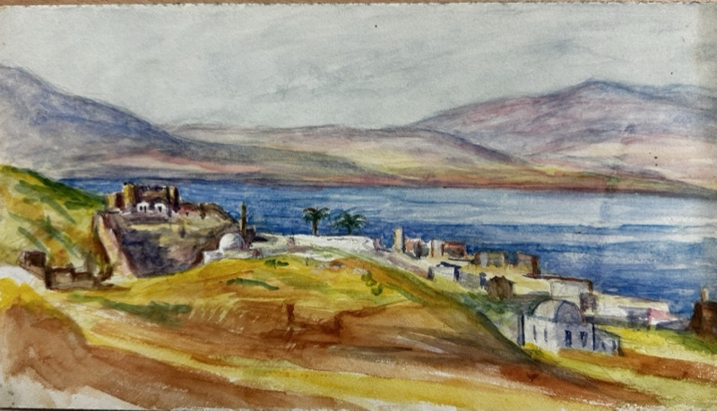
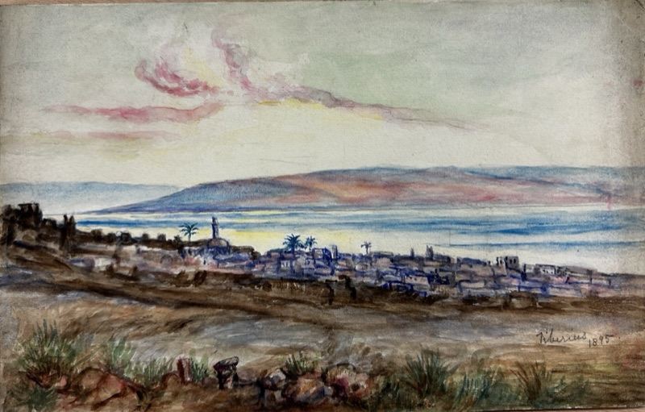
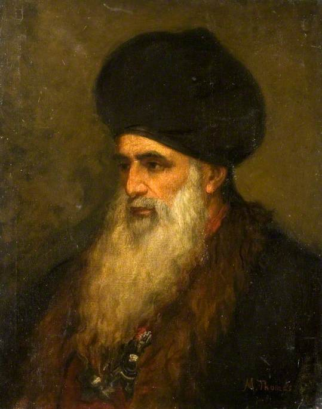
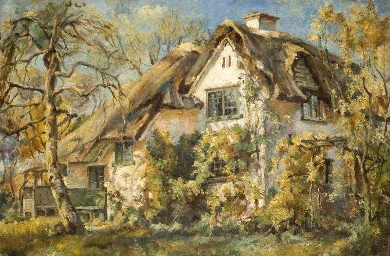
The museum is digitising more of the collection as the project runs; new paintings join its online catalogue – and this gallery – as they are completed.
Thomas and Pilkington were not the first British artists on that Syrian ground. Frederic Leighton – later President of the Royal Academy – had sketched quietly at Damascus in 1873, keeping his East private, folded into a timeless classical dreamscape. Amelia B. Edwards painted the ruins of Baalbek from direct observation in May 1874, and built a very public, campaigning authority on such dated records. Twenty-one years later the two women reached the same stones – and simply lived there, painting the present as they found it: markets, street dogs, people, weather. Three ways of looking at the same inherited landscape: possession, performance and participation.
Why does this matter? Since Edward Said’s Orientalism (1978), historians have argued about how European art and writing imagined “the East” – and whether women travellers, outsiders in their own profession, saw it differently. One tempting answer has been that they resisted the imperial gaze. The North Hertfordshire collection is interesting precisely because it refuses that comfort.
Take Thomas at her best. She prized the lived present over the famous monument, withheld easy verdicts – the people of Siloam, reputed thieves, “are probably no worse than their neighbours” – and turned her scepticism on her own civilisation as readily as on anyone else’s. She even made a principle of patient looking:
“… the last and truest impression which in time replaces the glamour of the first is, if less romantic, truer, and therefore more permanent.”
Margaret Thomas, Two Years in Palestine and Syria (1900)
And yet the same book reaches, in other moods, for “the Oriental pageant”, recoils from the prospect of a modernising, “Frenchified Arab town”, and repeats the racial commonplaces of its period without a blush. These are not two separable Thomases, one to admire and one to excuse: they are a single Victorian eye, humane and prejudiced in the same glance. That unresolved tension – not heroism, not villainy – is what makes her record genuinely valuable evidence in the Orientalism debate.
Pilkington’s contribution is quieter and, in its way, rarer: more than eighty watercolours made rapidly on the spot across some twenty-five years, never published, never exhibited, never composed for a public that expected the East as spectacle. A visual diary kept by a woman who sought no audience for it – and so a record with very little reason to perform.
Baalbek is where the threads cross: Edwards’s dated sheets of 1874, Pilkington’s watercolours of the temples, Thomas’s plates for a 1908 book on Damascus and Palmyra. One ruin, three witnesses, a generation apart. Meet the two artists or follow the road that took them there.
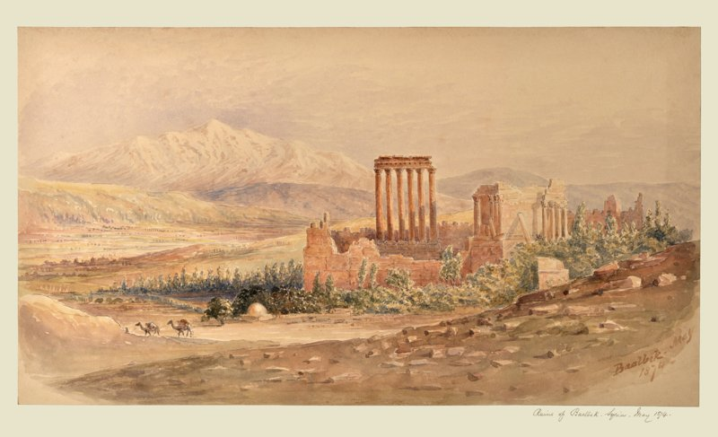
Rediscovering Victorian Women Travellers is a co‑production between the University of Hertfordshire and North Hertfordshire Museum, funded by an AHRC Impact Acceleration Account Co‑Production Heritage Award. Alongside this website and the booklet, it is producing an exhibition, new museum interpretation, public talks and schools resources – with students and museum staff working side by side.
Two Seasoned Travellers: Margaret Thomas, Henrietta Pilkington and the Victorian journey to Palestine and Syria follows the two women out and back – and tells the story of how their pictures came to Hertfordshire.
Written by William Bainbridge and Helen Esfandiary, with a preface by Ros Allwood, it is produced as part of an AHRC Impact Acceleration Account co‑production project between the University of Hertfordshire and North Hertfordshire Museum.
Research assistant
History, University of Hertfordshire
Cultural Services Manager
North Hertfordshire Museum
Project coordinator
Policy & Community Engagement Officer, University of Hertfordshire